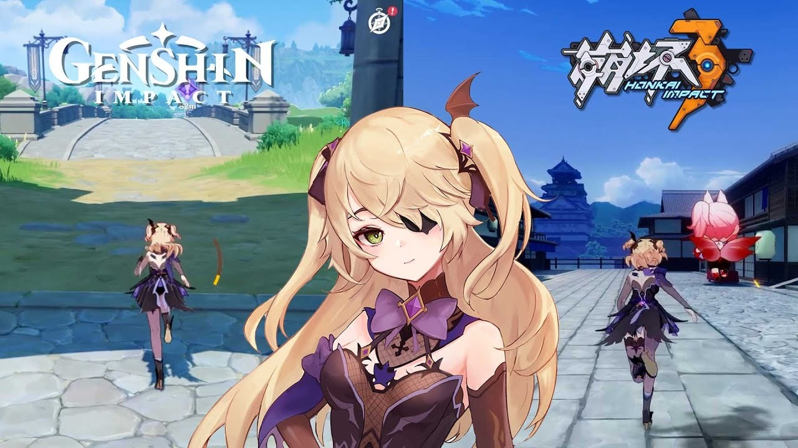
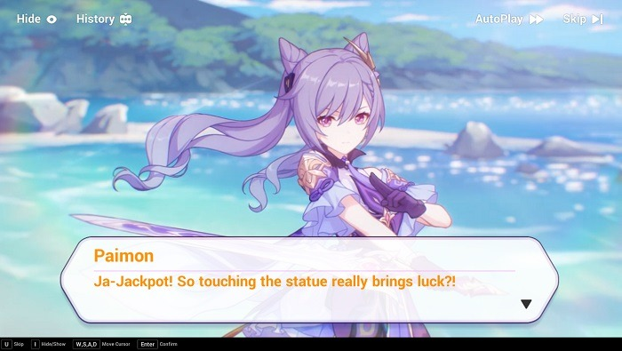
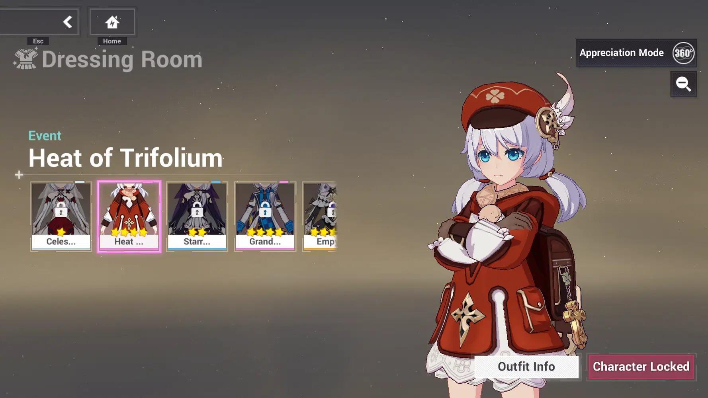
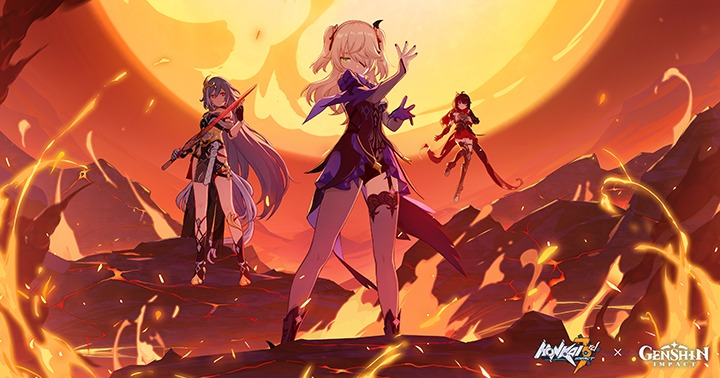
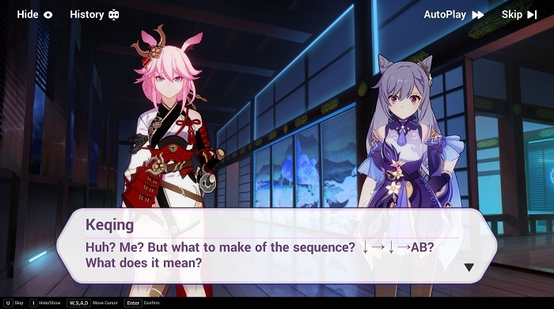
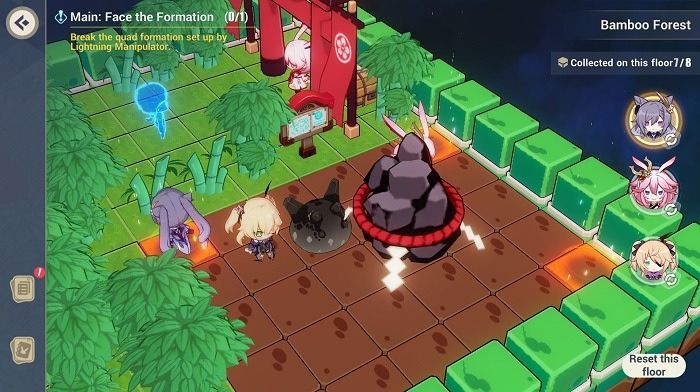

GALERÍA · COLABORACIÓN DE 2021
Recuerdos de otro mundo
Personajes, escenarios y momentos de Outworld Traveler.






GALERÍA · COLABORACIÓN DE 2021
Personajes, escenarios y momentos de Outworld Traveler.





